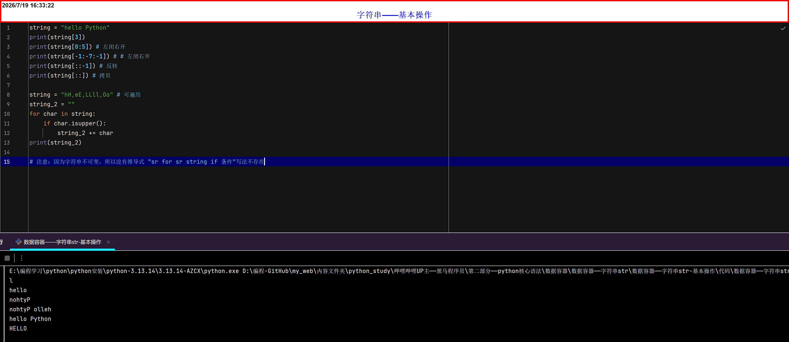

字符串str-基本操作
-
字符串是字符的容器：一个字符串中可以存放任意数量的字符。如：
"python"、'python'、"""python""" - 特点：不可变性(无法修改)、有序性(可以索引访问)、可迭代性(可以遍历)
- 字符串中的每一个字符元素都有对应的下标(索引),通过元素对应的索引，就可以获取对应的元素
- 与列表一致：同样有(正向索引和反向索引)，同样支持切片操作
-

字符串和列表的主要区别 |
||
|---|---|---|
| 维度 | 字符串 | 列表 |
| 是否可变 | ❌ 不可变 | ✅ 可变 |
| 元素类型 | 只能是字符 | 任意类型 |
| 推导式 | ❌ 不支持 | ✅ 支持 |
| 常规操作 | 大小写转换、查找、替换、拆分 | 增删改查、排序、反转 |
| 因为字符串不可变，所以它的“修改”方法都会返回新字符串，而不是更改原字符串。这是和列表最大的不同。 | ||